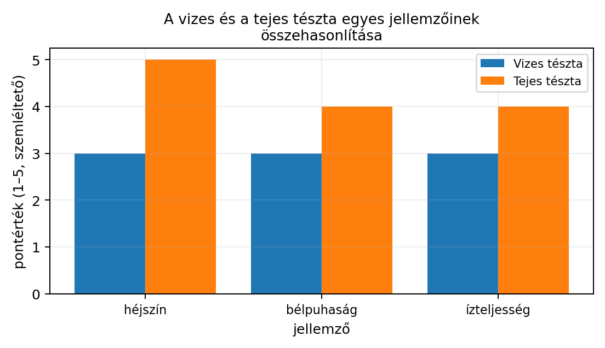
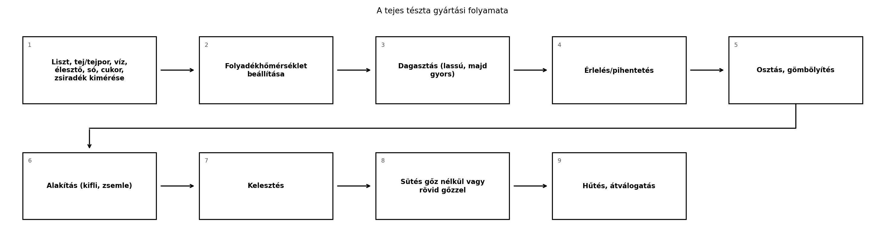

Képzelje el, hogy egy pékségben a reggeli kifli mellett tejes kiflit is kell készíteni, mert a vevők kifejezetten a más színű, finomabb bélzetű terméket keresik. Ha a vizes tésztához szokott pék ugyanúgy dagasztja a tejes tésztát, mint a vizes kiflit, a tészta lágyabb lehet, a héj a sütőben hirtelen megbarnul, a termék pedig nem lesz olyan, mint a megszokott tejes kifli. A tejes tészta tehát nem egyszerűen annyit jelent, hogy vizet tejre cserélünk: a tej összetétele megváltoztatja a tészta viselkedését, a kelesztést, a sütést és a késztermék minőségét.
Definíció. A tejes tészta olyan péksüteménytészta, amelyben a folyadék jelentős részét tej vagy tejjel egyenértékű folyadék (tejpor vízben oldva) adja, és emiatt a tésztában tejfehérje, tejcukor (laktóz) és jellemzően kevés tejzsír is van. A tejes tésztából készült termékeket tejes péksüteményeknek nevezzük.
A tejes tészta az átmenet a vizes tészta és a dúsított tészta között. Több tápanyagot tartalmaz, mint a vizes tészta, de a zsiradék- és cukortartalma általában még alacsony, a tészta nem olyan lágy és zsíros, mint a dúsított, kalácsos tészta. A tejes tészta megnevezésű termékekben a tej vagy tejpor ténylegesen jelen van, ezért a termék neve fogyasztói tájékoztatást is hordoz.
A tej három fő összetevője a technológia szempontjából: tejfehérje, laktóz és tejzsír. Mindegyik más módon hat.

Szabály. A tejes tészta jellemzői a vizes tésztához képest:
A tejben lévő laktózt a sütőélesztő nem erjeszti, ezért a laktóz nem alakul át szén-dioxiddá, hanem a sütéskor nagyrészt a héj színét és ízét gazdagítja. Ezért a tejes tésztához az élesztő mennyiségét nem a tejcukorra, hanem a lisztből felszabaduló egyszerű cukrokra kell méretezni.
Megjegyzés. A tej zsírtartalma a termék jellegéhez igazodik. A fölözött tejjel vagy vízben oldott fölözött tejporral készült tészta kevésbé lágyít, mint a teljes tej vagy zsíros tejpor. A tejpor használatakor mindig a szárazanyagmérleggel számoljuk át a folyékony tejet tejpor–víz keverékre.
A tejes tésztát ugyanúgy készíthetjük közvetlen (egyfázisú) vagy közvetett (előtésztás) eljárással, mint a vizes tésztát. A különbség a folyadékkezelésben van.
A közvetlen eljárás során az összes nyersanyagot egyszerre adagoljuk a dagasztógépbe. Ennek lépései:
A közvetett eljárás előtésztát használ, így a tejes tészta íze jobban kialakul, a bélzet finomabb lesz. Lépései:
A közvetett eljárás különösen akkor előnyös, ha a tejes tészta folyadékja hideg: az előtészta melegítő és érlelő hatása kiegyenlíti a hideg tej okozta hőmérséklet-csökkenést.

Dagasztási és kelesztési paraméterek. A tejes tészta általában kissé lágyabb, mint a vizes tészta, ezért a dagasztási időt és a gyors fokozat használatát a tészta állagához kell igazítani. A kelesztés hőmérséklete jellemzően 28–32 °C, relatív páratartalma 70–80%, az idő a termék nagyságától függ. A pontos értékeket az alfejezet technológiai lapjában adjuk meg, de az üzemi gyakorlatban a pékség technológiai lapja és a gyártói utasítás az irányadó.
A tejes tésztából készült leggyakoribb péksütemények:
Ezek a termékek közös jellemzője, hogy a terméknévben szereplő „tejes” utal a tejjel készült tésztára. Ha a termék nem tartalmaz tejet vagy tejterméket, nem nevezhető tejesnek. A tejes megnevezésű termékben a tejösszetevő jelen kell legyen, és allergénként jelölni kell.
A tejes tészta gyártása lépésenként:
Anyagkimérés és előkészítés. A lisztet, tejet, tejport, vizet, élesztőt, sót, cukrot és zsiradékot pontosan mérjük. A tejet hűtőből kivéve ellenőrizzük a hőmérsékletét és a felhasználhatósági idejét. A tejport nem szabad csomósan a lisztre önteni: száraz részt kimérve, vagy vízben előzetesen elkeverve adagoljuk.
Folyadékhőmérséklet beállítása. A tejes tészta tömeghőmérsékletét a liszt és a folyadék hőmérséklete, valamint a dagasztógép felmelegítő hatása határozza meg. Hideg tej esetén a víz legyen melegebb; forró folyadék tilos, mert károsítja az élesztőt és a sikért. A pontos hőmérsékletet a Tésztahőmérséklet és dagasztóvíz számítása alfejezet képleteivel és a technológiai lap adataival kell összehangolni.
Dagasztás. A tejes tésztát addig dagasztjuk, amíg a felülete sima, fényes és nem ragadós nem lesz. A dagasztógép gyors fokozatát csak akkor használjuk, ha a tészta már összeállt; a túldagasztás melegíti a tésztát, és a tészta ragadós lesz. A cél tésztahőmérséklet 26–28 °C (ellenőrizendő).
Érlelés. A dagasztott tésztát letakarva, kb. 26–28 °C-on, 20–40 percig pihentetjük. Ezalatt az élesztő szén-dioxidot termel, a sikér ellazul, és a tészta jobban formázható.
Osztás, gömbölyítés. A tésztát a technológiai lap feladási tömege szerint osztjuk, majd gömbölyítjük. A tejes tészta lágyabb, ezért óvatosan, kevesebb liszttel dolgozzunk; a túl sok formázó liszt a felületen csíkokat okoz.
Pihentetés. A gömbölyített tésztadarabok rövid pihentetés után alakíthatók. A pihentetési idő 5–15 perc, hogy a sikér ellazuljon.
Alakítás. Tejes kiflihez a gombócból cipót formálunk, majd háromszög alakúra nyújtjuk, és a szélesebb végtől indulva feltekerjük, a végeket enyhén befelé hajlítva. Tejes zsemléhez a gombócot kerekre igazítjuk, vagy hosszúkásra formázzuk.
Kelesztés. A formázott darabokat sütőlemezre helyezzük, majd kelesztőben kb. 28–32 °C-on, 70–80% relatív páratartalom mellett kelesztjük. A kelesztési idő 30–50 perc, amíg a tészta duplájára nem nő, és az ujjpróba után a benyomódás lassan visszaugrik.
Vetés-előkészítés. A tejes kiflit kelesztés után enyhén megkenhetjük tejjel vagy vízzel, hogy a héja fényes, barnább legyen. Tejes zsemlénél ezt gyakran elhagyják; a teteje sima marad.
Sütés. A tejes termékeket általában 210–230 °C-ra előmelegített kemencében sütik (tanulási példa, ellenőrizendő: technológiai lap). A tejes tészta a laktóz miatt gyorsan barnul, ezért a hőmérsékletet kb. 10 °C-kal alacsonyabbra, a sütési időt rövidebbre állíthatjuk, mint a vizes termékeknél. A sütés elején rövid gőzölés adható, de a tejes héj magától is szép színt kap.
Hűtés, átválogatás. A megsült terméket rácsra vagy erre alkalmas hűtőfelületre tesszük, hogy az alja ne párásodjon. A sérült, repedt vagy túlsült darabokat kiválogatjuk.
A 7. lépés kifliformázását az alábbi képsor bontja mozdulatokra. A gömbölyített gombócból (1) rövid cipót formálunk (2), ezt nyújtófával háromszögre nyújtjuk úgy, hogy a csúcs felénk nézzen (3). A széles végtől indulva feltekerjük, közben a csúcsot enyhén húzzuk (4); a csúcs a tekercs aljára kerül, ez a zárás, a végeket kúposra sodorjuk (5). Végül patkó alakúra hajlítjuk, a végeket befelé (6).
Ha a zárás felülre kerül, kelesztés közben szétnyílik; ha túl szorosan tekerjük, a kifli a hajlatnál megreped (jobb alsó kép). A kész tejes kifli tejjel kenve fényes, barnább héjú. A Sodrás, hurkolás, fonás és csavarás alfejezet a kiflit ovális lapból is leírja; a háromszöges módszer a tejes kifli technológiai lapja szerinti eljárás. A HTML-kiadásban a lépéssor lejátszható.
HACCP. A tejes tészta gyártásában a kritikus pontok közé tartozik:
Higiénia. A tejes tésztához használt edények, kelesztőlemezek és eszközök tisztasága kiemelten fontos, mert a tej kiváló táptalaj a mikrobáknak. A tejes tészta készítésénél is érvényesek az általános személyi higiéniai szabályok: tiszta munkaruha, hajháló, ékszerek nélkül, sebek lefedése, kézmosás a munka kezdetekor, a műveletek közötti szennyeződésnél és a WC után. Fertőző betegség esetén az élelmiszerrel való munka tilos.
Allergén. A tejes tésztából készült termékekben a tej vagy tejpor tejfehérjét tartalmaz, amely az 1169/2011/EU rendelet szerint allergén. A „tejes” megnevezés önmagában is utal erre, de a fogyasztói tájékoztatásban az allergént akkor is fel kell tüntetni, ha a tej nem a termék nevében szerepel. A tejes termékek gyártásakor a keresztszennyeződést különösen akkor kell figyelni, ha ugyanabban az üzemben tejmentes terméket is készítenek: a közös eszközök, sütőlemezek, dagasztógép, munkafelületek tejfehérjét vihetnek át. A tejmentes terméket a tejes termék előtt gyártjuk, vagy alapos tisztítást végzünk, és az allergént jelöljük a csomagoláson.
1. Példa (A) – Tejporból tejpótlás számítása. Egy tejes kifli receptje 10,0 kg pasztőrözött tejet ír elő. A raktárban fölözött tejpor van, amelynek szárazanyag-tartalma 95 m/m% (ellenőrizendő: a gyártói adatlap). A folyékony tej szárazanyag-tartalma 12 m/m% (tanulási példa). Mennyi tejporral és vízzel helyettesíthető a tej?
Adott: - - -
Keresett: és .
A tej szárazanyag-tömege:
.
A tejpormennyiség:
.
A víz:
.
Ellenőrzés: , tehát a folyadék tömegét megőriztük.
Megjegyzés a zsírról. A fölözött tejpor nem pótolja a tej zsírját (10 kg 2,8%-os tejben kb. 0,28 kg); ha a termékjelleg megkívánja, ennyi zsiradékot (pl. vajat) külön adagolunk, vagy teljes tejport használunk (ellenőrizendő: a gyártói adatlap). ∎
2. Példa (B) – Receptúra-ellenőrzés. Az alábbi tejes tészta receptúráját 100 kg lisztre vetítve adjuk meg: liszt 100%, tej 55%, víz 5%, élesztő 2,5%, só 2,0%, cukor 2,0%, margarin 2,0%. A tétel 10,0 kg liszttel készül. Számítsa ki minden nyersanyag mennyiségét, és ellenőrizze, hogy az összeg egyezik-e a tésztatömeggel.
A liszt = 10,0 kg, így a szorzó
.
Mennyiségek: - tej:
- víz:
- élesztő:
- só:
- cukor:
- margarin:
Összeg:
.
Ellenőrzés: a tészta tömege 16,85 kg; a lisztre vetített százalékok
összege 168,5%, ami összhangban van a tejes tésztákra jellemző
folyadékkal. ∎
3. Példa (C) – Feladási tömeg és darabszám. A 2. példa tésztájából 50 g késztermék tömegű tejes kiflit készítünk. A sütési veszteség 13% (tanulási példa). Számítsa ki a feladási tömeget és a formázható darabszámot.
A feladási tömeg
,
ahol
és
:
.
A tésztatömeg 16,85 kg = 16 850 g, így a darabszám:
darab.
Ellenőrzés:
,
tehát a tészta legfeljebb 293 darabra elég. ∎
Előírás. A tejes tésztából készült termékek csomagolt és nem előrecsomagolt formában is értékesíthetők. A „tejes” megnevezésű terméknek ténylegesen tejet vagy tejterméket kell tartalmaznia; a fogyasztói tájékoztatás nem vezetheti félre a vevőt. A tejfehérje a 1169/2011/EU rendelet szerint allergén, ezért a tejes termékek jelölésénél fel kell tüntetni. A Magyar Élelmiszerkönyv sütőipari termékekre vonatkozó előírásai a tejes termékcsoport egyes termékeire csoportnormákat, minimális szárazanyag- és zsiradéktartalmat írhatnak elő (ellenőrizendő: a hatályos Magyar Élelmiszerkönyv előírás száma és konkrét követelményei). A tömegtűrésre az előrecsomagolt élelmiszerek jelöléséről szóló előírások vonatkoznak (ellenőrizendő: a hatályos tömegellenőrzési és jelölési jogszabály).
Egy pékségben a pék hétfő reggel tejes zsemlét sütött, de a termék héja a szokásosnál sokkal sötétebb, a teteje gyakran repedezett. A pék úgy gondolta, hogy a kemence hőmérséklet-érzékelője hibás, és ellenőrizte a kemence hőfokát; az rendben volt. A tészta viszont hideg volt: a hűtőből közvetlenül kimért tej hőmérséklete 4 °C volt, amit a dagasztóvíz nem ellensúlyozott. Emiatt a tészta kilépő hőmérséklete 22 °C lett a célzott 26–28 °C helyett. A hideg tészta lassabban kelt, ezért a pék hosszabb kelesztést és magasabb sütési hőmérsékletet alkalmazott. A hosszú kelesztés miatt a tészta felülete kicsit kiszáradt, a magas hőmérséklet pedig a tejcukor miatt gyorsabban barnuló felületet égetett. A tanulság: tejes tésztánál a folyadékhőmérsékletet és a tészta hőmérsékletét minden tételnél mérni kell, és a sütési paramétereket nem a héj színe alapján, hanem a technológiai lap szerint kell tartani. A hibát a folyadékhőmérséklet beállításával és a kelesztési idő szabályozásával lehetett megelőzni.
Cél. Tejes kifli vagy tejes zsemle készítése tejes tésztából technológiai lap szerint, a termékbiztonság és a gépbiztonság betartásával.
Eszközök és anyagok. Dagasztógép, mérleg, kézi szakácsmérleg, kelesztőlap, sütőlemez, lisztes kézi szerszámok, hűtőrács, tejes tészta nyersanyagai (liszt, tej/tejpor, víz, élesztő, só, cukor, margarin), fűtött kelesztő, gőzölésre alkalmas kemence.
Higiénia. Vegyen fel tiszta munkaruhát, hajhálót, távolítsa el a gyűrűket és karórákat. Ellenőrizze a kéz bőrét: sebeket vízzáró, színes kötszerrel kell lefedni. Mossa meg a kezét, és fertőtlenítse, mielőtt a tésztához ér. A munkafelületet, az edényeket és a sütőlemezeket tisztítsa meg; a tejes tésztához csak tiszta, száraz eszközöket használjon. A tejet hűtőből kivéve ellenőrizze a hőmérsékletét és a lejárati idejét.
Gépbiztonság. A dagasztógépet csak betanítás után, felügyelettel kezelje. A gép indítása előtt ellenőrizze, hogy a védőburkolat a helyén van, a reteszelés működik, és a keverőszár nem akadályoztatott. A dagasztóba nyúlni futó gép alatt tilos. A gépet leállítva, az áramtalanítás, a hálózatról való leválasztás, a forgó rész teljes megállása és a vészleállító lenyomása után szabad tisztítani vagy a tésztát kivenni. A kemence ajtaját óvatosan, hosszú ujjú kesztyűben nyissa; a forró gőz égést okozhat.
Lépések:
Ellenőrzési pontok. A tészta sima felületű, enyhén fényes, nem ragad; a kelesztés után a tészta összenyomásra lassan visszaugrik; a sütés után a héj egyenletesen barnás, a bélzet ne nyerses legyen, a tömeg a feladási és késztermék tömegnek megfelel.
Tipikus hibák a gyakorlatban. A tészta túl hideg, mert a tej hűtőhideg; a ragadás miatt túl sok formázó liszt; a sütő hőfoka túl magas, és a tejes héj gyorsan megég; a kelesztő páratartalma túl alacsony, ezért a felület kiszárad.
Dokumentálás. A pékség gyártmánylapján vagy munkanaplójában rögzítse a tétel lisztmennyiségét, a tészta hőmérsékletét, a kelesztési időt, a sütési időt és hőmérsékletet, a CCP-ellenőrzések eredményét és az allergénjelölést.
Termék: Tejes kifli
Termékcsoport: tejes péksütemény
Darabtömeg: 50 g késztermék, feladási tömeg kb. 57,5
g
Darabszám: 293 db 10,0 kg liszttel
Receptúra-táblázat
| Nyersanyag | Lisztre vetített % | Mennyiség (kg) | Megjegyzés |
|---|---|---|---|
| Búzaliszt BL 80 | 100,0 | 10,000 | szobahőmérsékletű |
| Pasztőrözött tej (2,8% zsír) | 55,0 | 5,500 | hűtött, felhasználás előtt hőmérséklet-kiegyenlítve |
| Víz | 5,0 | 0,500 | a dagasztófolyadék hőmérsékletéhez |
| Élesztő | 2,5 | 0,250 | friss, morzsolt |
| Só | 2,0 | 0,200 | jódozott, szitált |
| Cukor | 2,0 | 0,200 | kristálycukor |
| Margarin | 2,0 | 0,200 | hideg, kis kockákban |
| Összesen | 168,5 | 16,850 | a tészta tömege |
Műveleti paraméterek
Allergének. A termék tejet tartalmaz, ami tejfehérjét tartalmaz; az 1169/2011/EU rendelet szerint tej allergén. A felhasznált margarin zsírösszetétele és esetleges tejmentessége a gyártói adatlaptól függ; ha a margarin tejfehérjét nem tartalmaz, a termék tejallergénje a tejből és a tejporból származik. A tejes kifli gyártásakor a tejmentes termékek keresztszennyeződését el kell kerülni.
HACCP- és minőségi pontok. A nyers tej hőmérséklete ≤ 4 °C, a tészta hőmérséklete 26–28 °C, a kelesztő páratartalma 70–80%, a sütés belső hőmérséklete legalább 96 °C (jellemzően 96–98 °C), a késztermék tömege 50 g, a héj egyenletes, a bélzet átsült, nem nyerses, idegen anyagtól mentes. A paraméterek tanulási példák, az üzemi technológiai lap és a HACCP-terv értékei irányadók.
A tejes péksütemények minőségi jellemzői:
A minőségvizsgálat során mérjük a darabtömeget, ellenőrizzük a bélzet átsültségét, a héj tapintását, az ízét, és összehasonlítjuk a technológiai lap elvárásaival. Ha a termék túl sápadt, a fogyasztó a vizes termékkel keverheti; ha túl sötét, az égett íz a minőséget rontja.
1. Tünet: a tejes kifli héja sápadt, pedig a tészta jól
kelt.
Lehetséges ok: a tésztához nem volt elegendő tej, vagy a termék nem
kapott tejes kenést; az elnevezés mégis „tejes” volt. A megelőzés: a
receptúra szerinti tejmennyiség pontos kimérése, és a termék nevének és
összetételének egyeztetése.
2. Tünet: a tejes tészta ragad, nehezen
formázható.
Lehetséges ok: a folyadék túl hideg, ezért a sikér nem lazul el; vagy a
dagasztási idő túl rövid, túl kevés; vagy a tejpor nem keveredett el, és
a tészta nedves maradt. A megelőzés: a folyadék hőmérsékletének
beállítása, a dagasztási idő pontos betartása, a tejport előzetesen
elkeverni.
3. Tünet: a tejes termék héja hirtelen sötétbarna, a belseje
viszont nyerses, sületlen.
Lehetséges ok: a kemence hőmérséklete túl magas, a tejes tészta gyorsan
barnul, de a bélzet nem sül át. A megelőzés: a sütési hőmérséklet
csökkentése, a sütési idő növelése, a kemence hőmérsékletének
ellenőrzése.
4. Tünet: a tejes zsemle kiszárad, a héja
repedezik.
Lehetséges ok: a kelesztő páratartalma túl alacsony, a tészta felülete
bőrösödik, a sütéskor a héj nem tud tágulni. A megelőzés: a kelesztő
páratartalmának 70–80% közötti tartása, a tésztadarabok letakarása a
szünetekben.
1. feladat (A). Fogalmazza meg: mi a tejes tészta, és miben tér el a vizes tésztától a technológiai hatása tekintetében? Adjon meg legalább három különbséget.
2. feladat (A). Egy tejes tészta receptjében liszt 100%, tej 50%, víz 10%, élesztő 2%, só 2%, cukor 1%, zsiradék 1%. Mennyi az összes lisztre vetített százalék? Ha a liszt 5,0 kg, mennyi a tészta tömege?
3. feladat (B). A technológiai lap szerint a tejes kifli feladási tömege 57,5 g, a sütési veszteség 13%. Mennyi a késztermék tömege? Hány darab kifli készíthető 16,85 kg tésztából? (Kerekítse a darabszámot lefelé.)
4. feladat (B). A tejes tészta készítésekor a pék 10,0 kg liszthez 5,5 kg tejet és 0,5 kg vizet mér. A cél tésztahőmérséklet 27 °C. A liszt hőmérséklete 18 °C, a dagasztógép felmelegítő hatása becsülhetően 6 °C. A folyadék (tej + víz) kiegyenlített hőmérsékletét a Tésztahőmérséklet és dagasztóvíz számítása alfejezet szorzós szabályával számítsd ki: (egyszerűsített tanulási szabály; itt ). Mekkora legyen a folyadék hőmérséklete? Mit jelent ez a hűtőből kivett, 4 °C-os tejre?
5. feladat (C). Egy tejes kifli tételnél a héj egyes darabokon sötétbarna, másokon sápadt. A kelesztőben a hőmérséklet 32 °C, a páratartalom 55%. A sütő hőmérséklete 250 °C. Melyik paraméter okozhatja az egyenetlenséget? Érveljen a technológiai lépések sorrendjével.
6. feladat (D). Készítse el a tejes zsemle technológiai lapját a tejes kifli mintájára: liszt 5,0 kg, tej 50%, víz 8%, élesztő 2%, só 2%, cukor 1%, margarin 1%. Adja meg a feladási tömeget 50 g késztermék és 12% sütési veszteség esetén, a darabszámot, a kelesztési paramétereket és a sütés jellemzőit. Ellenőrizze a tömegmérleget.
1. feladat. A tejes tészta olyan péksüteménytészta, amelyben a folyadék jelentős része tej vagy tejpor–víz keverék. Különbségek: a tejes tészta barnább héjú (laktóz), puhább bélzetű, teltebb ízű, magasabb a tápértéke, és a tészta általában lágyabb, mint a vizes tészta. A tejes tésztában allergén a tej.
2. feladat. Az összeg 100 + 50 + 10 + 2 + 2 + 1 + 1 = 166%. A liszt 5,0 kg, ezért a tömeg: . Ellenőrzés: a százalékok lisztre vetítve 166%, tehát tésztatömeg 8,30 kg.
3. feladat. A késztermék tömege: . Darabszám: ; , tehát 293 darab. Ellenőrzés: , a maradék 2,5 g tészta óhatatlanul veszteség a formázásnál.
4. feladat. Adott:
,
cél
,
.
A Tésztahőmérséklet és dagasztóvíz számítása
szabálya szerint:
Ellenőrzés: a folyadék kiegyenlített célhőmérséklete itt 30 °C. Ha az
5,5 kg tej 4 °C-os, a 0,5 kg víznek
-osnak
kellene lennie, ami lehetetlen; a tanulság: a hűtőhideg tejet előbb
temperálni kell, és a keverék hőmérsékletét mérni.
5. feladat. Az egyenetlen barnulást a kelesztő alacsony páratartalma (55%) és a túl magas sütési hőmérséklet (250 °C) együtt okozhatja. Az alacsony páratartalom miatt a tésztadarabok felülete kiszárad, bőrösödik, a sütéskor a héj nem tud egyenletesen tágulni, és a már kiszáradt részek gyorsan égnek, míg a nedvesebb részek sápadtak maradnak. A kemence hőfoka a tejes tésztához túl magas: a laktóz gyorsan barnul. A helyes gyakorlat: a kelesztő páratartalmát 70–80%-ra, a sütési hőmérsékletet kb. 210–230 °C-ra kell állítani, és ellenőrizni kell a tészta felületét a kelesztés végén.
6. feladat. A technológiai lap:
Termék: Tejes zsemle, késztermék 50 g, feladási tömeg .
Receptúra (5,0 kg liszttel):
| Nyersanyag | % | Mennyiség (kg) |
|---|---|---|
| BL 80 liszt | 100 | 5,000 |
| Tej | 50 | 2,500 |
| Víz | 8 | 0,400 |
| Élesztő | 2 | 0,100 |
| Só | 2 | 0,100 |
| Cukor | 1 | 0,050 |
| Margarin | 1 | 0,050 |
| Összesen | 164 | 8,200 |
Tésztatömeg: 8,20 kg. Darabszám: , tehát 143 darab. Kelesztés: 28–32 °C, 70–80% relatív páratartalom, 30–45 perc. Sütés: 210–230 °C, rövid gőz, 13–16 perc, belső hőmérséklet legalább 96 °C (jellemzően 96–98 °C). A tömegmérleg: , ellenőrizve. A tésztából 143 db × 57 g = 8151 g, a maradék 49 g a formázási veszteség.
A tejes tészta olyan péksüteménytészta, amelyben a folyadék jelentős részét tej vagy tejpor–víz keverék adja. A tejfehérje és a tejzsír puhább, finomabb bélzetet, a laktóz barnább héjat és teltebb ízt ad. A tejes tésztát közvetlen vagy közvetett eljárással készítjük; fontos a folyadékhőmérséklet, a dagasztási idő és a kelesztő páratartalmának ellenőrzése. A tejes termékek közé tartozik a tejes kifli, tejes zsemle, tejes csiga és tejes fonott péksütemény. A termék nevében a „tejes” utal a tejtartalomra; a tejfehérje allergén, ezért jelölni kell. A tejes tészta lágyabb, mint a vizes, és a héja gyorsabban barnul, ezért a sütési hőmérsékletet és az időt a technológiai laphoz kell igazítani. A tejpor használatakor a tej–tejpor átszámítást szárazanyagmérleggel végezzük. Ezeket az alapokat használjuk a Dúsított tészta, dúsított péksütemények és kalácsfélék alfejezetben, ahol a zsiradék- és cukortartalom tovább nő.
Az alfejezet a tejes tészta és tejes péksütemények általános sütőipari technológiáját tanítja, a szakmai alapokra építve. A megadott receptúrák, hőmérsékletek, idők és a sütési veszteség értékei tanulási példák, amelyeket az üzemi technológiai lap és a gyártói adatlap alapján kell ellenőrizni. A Magyar Élelmiszerkönyv sütőipari termékekre vonatkozó csoportnormái és a tejes termékek minimális összetételi követelményei ellenőrizendők: a hatályos Élelmiszerkönyv-előírás pontos száma és a konkrét határértékek a kiadás előtt kigyűjtendők. Az allergénjelölés az 1169/2011/EU rendelet alapja, de a nem előrecsomagolt termékek jelölési módja a hatályos magyar végrehajtási szabályoktól függ (ellenőrizendő). A HACCP-paraméterek (tej tárolása ≤ 4 °C, tésztahőmérséklet 26–28 °C, kelesztő páratartalma 70–80%, belső hőmérséklet legalább 96 °C (jellemzően 96–98 °C)) a pékség HACCP-tervéből és hatósági útmutatóból származtatandók, itt tanulási példaként szerepelnek.